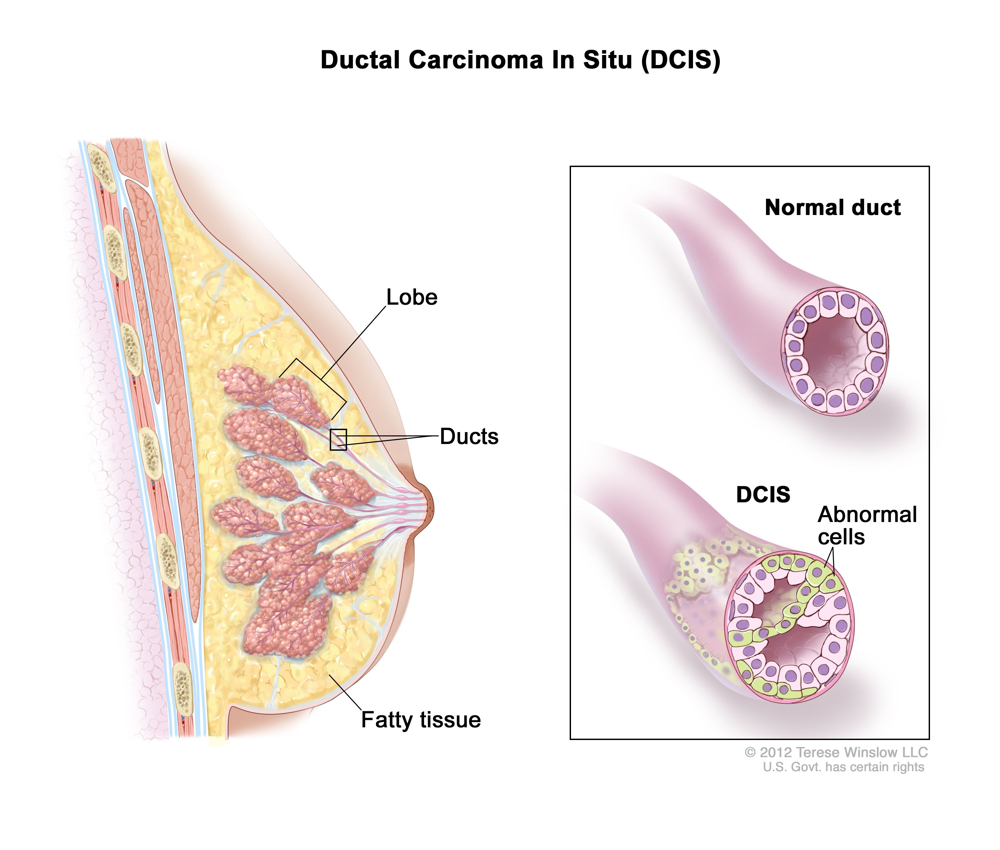
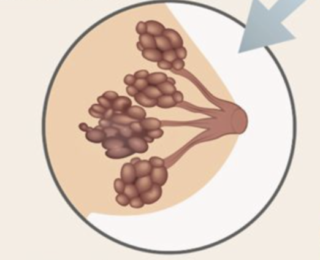
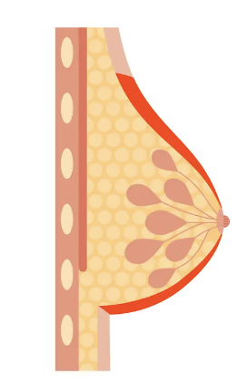
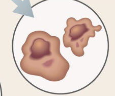
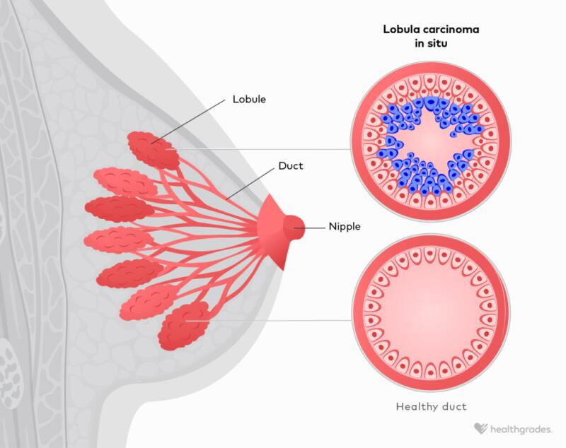

| Ductal breast cancer |
Ductal breast cancer is a type of breast cancer that begins in the milk ducts, which are the channels that carry milk from the lobules of the breast to the nipple. It is the most common form of breast cancer and can be classified into two main types:
Ductal Carcinoma In Situ (DCIS): A non-invasive or pre-invasive cancer where the abnormal cells are confined to the milk ducts and have not spread to surrounding breast tissue.
Invasive Ductal Carcinoma (IDC): A more advanced form where the cancer cells have spread beyond the milk ducts into the surrounding breast tissue and possibly to other parts of the body.
|
 |
| Mixed tumor breast cancer |
Mixed tumor breast cancer refers to a type of breast cancer that contains more than one type of cell or tissue. It typically involves a combination of two or more histological subtypes of breast cancer, such as ductal and lobular carcinoma.
The characteristics of mixed tumor breast cancer can vary depending on the proportions and aggressiveness of each component, which may influence treatment strategies and prognosis. Because of its complexity, diagnosis often requires detailed pathological analysis to identify the different tissue types present. Treatment typically follows the protocols for the dominant or most aggressive subtype in the tumor. |
 |
| Inflammatory breast cancer |
Inflammatory breast cancer (IBC) is a rare and aggressive form of breast cancer that occurs when cancer cells block the lymphatic vessels in the skin of the breast. This blockage causes the breast to appear inflamed, with symptoms that may include:
Redness, swelling, and warmth in the breast.
Skin thickening or dimpling, resembling an orange peel (peau d'orange).
Rapid changes in breast size, often within weeks or months.
Inverted nipple or nipple discharge.
Pain or tenderness in the affected breast.
Unlike other types of breast cancer, IBC typically does not form a distinct lump and is often diagnosed at an advanced stage due to its aggressive nature. Treatment often involves a combination of chemotherapy, surgery (such as mastectomy), and radiation therapy. Early diagnosis and prompt treatment are critical for improving outcomes. |
 |
| Mucinous breast cancer |
Mucinous breast cancer, or colloid carcinoma, is a rare type of breast cancer where the tumor cells are surrounded by mucus. It typically grows slowly, is less likely to spread, and often has a better prognosis than other invasive breast cancers. Commonly found in postmenopausal women, it may present as a painless lump and is usually treated with surgery, hormone therapy, or radiation. |
 |
| Labular breast cancer |
Lobular breast cancer, or lobular carcinoma, originates in the milk-producing lobules of the breast and includes two types: Lobular Carcinoma In Situ (LCIS) and Invasive Lobular Carcinoma (ILC). LCIS is non-invasive and indicates a higher risk of developing breast cancer, while ILC spreads beyond the lobules to surrounding tissues and other parts of the body. Unlike other breast cancers, ILC may not form a distinct lump, instead causing subtle changes like thickening or shape alterations. Diagnosis involves imaging and biopsy, and treatment options include surgery, hormone therapy, radiation, and chemotherapy, depending on the stage and hormone receptor status.
|
 |